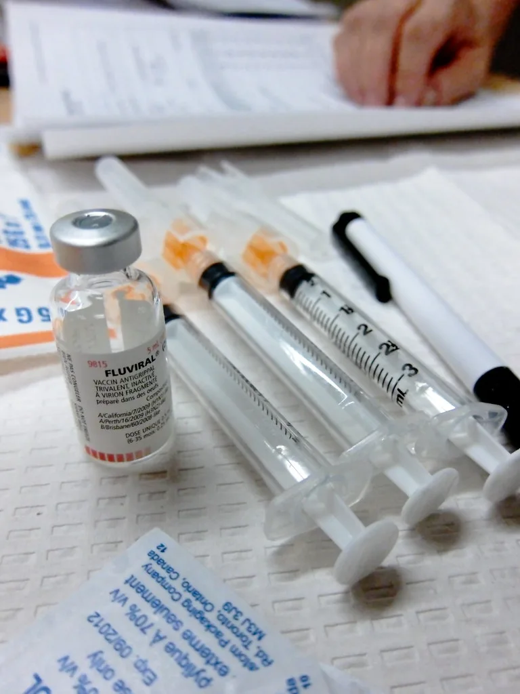
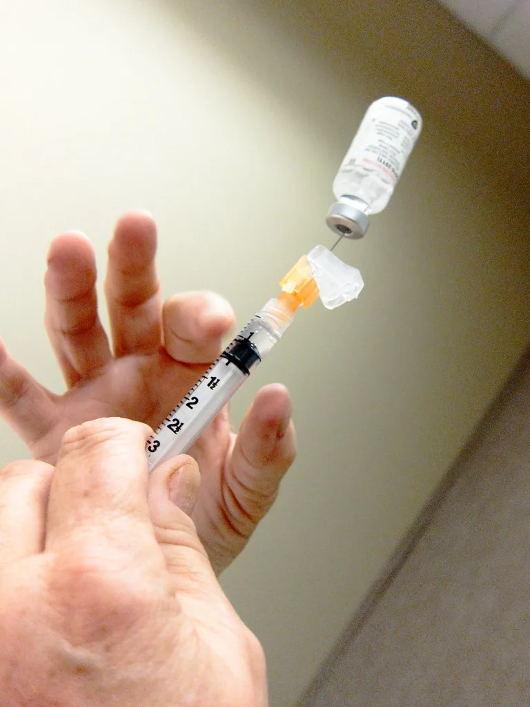

겨울철 독감(인플루엔자)이 예년보다 빠르고 가파르게 확산하고 있다. 질병관리청에 따르면 의원급 의료기관의 외래환자 1000명당 독감 의심환자 수를 나타내는 의사환자 분율은 지난달 22.8명으로, 전주보다 3.6명 늘며 2주 연속 증가세를 보였다. 41주차 21.6명에서 42주차 17.7명으로 잠시 꺾였던 유행이 43주차 19.2명, 44주차 22.8명으로 다시 가팔라진 모양새다.
입원환자 수도 뚜렷하게 늘고 있다. 전국 223개 병원급 표본감시 의료기관이 신고한 44주차 독감 입원환자는 461명으로, 전주(389명)보다 18.5% 증가했다. 특히 올해 입원환자는 지난해 같은 시기보다 2배 넘는 수준이어서, 유행 속도가 예년보다 빠르다는 우려가 나온다. 의료 현장에서는 소아청소년과를 비롯한 외래 진료 현장이 이전보다 붐비는 분위기도 감지된다.

더 심각한 대목은 사망 신고 건수다. 올해는 지금까지 21건의 독감 관련 사망이 신고됐는데, 이는 지난해 같은 기간(4건)과 비교해 약 5배 늘어난 수치다. 질병관리청은 고위험군을 중심으로 중증 사례가 늘고 있는 만큼 각별한 주의가 필요하다고 설명했다. 사망 사례 대부분이 기저질환을 가진 고령층이나 면역력이 약한 계층에서 발생하는 경향이 있는 만큼, 고위험군에 대한 조기 대응이 특히 중요하다는 지적이다.
연령별로 보면 어린이와 청소년층에서 유행이 두드러진다. 44주차 기준 외래환자 1000명당 의사환자 분율은 7~12세가 60.9명으로 가장 높았고, 13~18세 37.4명, 1~6세 33.1명 순으로 나타났다. 학교와 학원 등 단체 생활이 많은 연령대를 중심으로 전파가 빠르게 이뤄지고 있는 것으로 풀이된다. 자녀를 둔 가정에서는 등교·등원 전 발열 등 의심 증상을 꼼꼼히 살펴야 할 필요성이 커지고 있다.

질병관리청은 65세 이상 어르신과 임신부, 생후 6개월부터 14세까지의 어린이를 국가 무료 예방접종 대상으로 운영하고 있다. 이번 절기부터는 무료 접종 대상 어린이 연령이 기존 13세에서 14세까지로 한 살 더 확대됐다. 아직 접종을 받지 못한 고위험군이라면 유행이 정점에 이르기 전에 서둘러 접종을 받는 것이 중요하다.
임승관 질병관리청장은 "이번 절기에 이미 인플루엔자에 걸렸더라도 다른 유형의 인플루엔자에 또 감염될 수 있다"며 어르신, 어린이, 임신부 등 고위험군은 서둘러 예방접종을 받아달라고 당부했다. 아울러 손 씻기, 기침할 때 옷소매로 입과 코 가리기, 마스크 착용, 실내 환기 등 기본적인 호흡기 감염병 예방 수칙을 지켜달라고 강조했다.
방역당국은 독감 외에도 다른 호흡기 감염병이 함께 유행할 수 있는 시기인 만큼, 발열이나 기침 등 의심 증상이 나타나면 무리하게 등교나 출근을 하지 말고 충분히 휴식을 취하며 주변 전파를 막아야 한다고 권고했다. 가정과 학교, 직장 등 공동생활 공간에서는 환기와 손 위생 관리를 평소보다 한층 더 신경 써야 한다는 목소리도 커지고 있다. 특히 어린이나 고령자가 있는 가정에서는 작은 발열이나 기침도 가볍게 넘기지 말고 조기에 진료를 받는 것이 중증으로 악화하는 것을 막는 데 도움이 된다는 조언이다. 겨울철 독감 유행이 본격화하는 가운데 예방접종과 생활 속 수칙 준수가 무엇보다 중요한 시점이라는 게 전문가들의 공통된 조언이다.